STATES
MAGICAL
TOWNS
INTERNATIONAL
EVENTS
BLOG
VIDEOS
DOWNLOADS
Menu
STATES
MAGICAL
TOWNS
INTERNATIONAL
EVENTS
BLOG
VIDEOS
DOWNLOADS
Search
English
Español
English
Menu
English
Español
English
tianguis turístico Mexico 2023
Tianguis Turístico México 2023 Results
Mexico through the years
Day of the dead
Day of the Dead Charro González
Unboxing Day of the Dead Charro González
Day of the Dead parade CDMX
Learn more about the Day of the Dead.
Click here
destination of the month
Yucatán
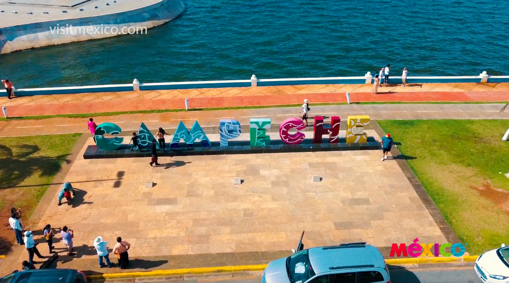
Campeche
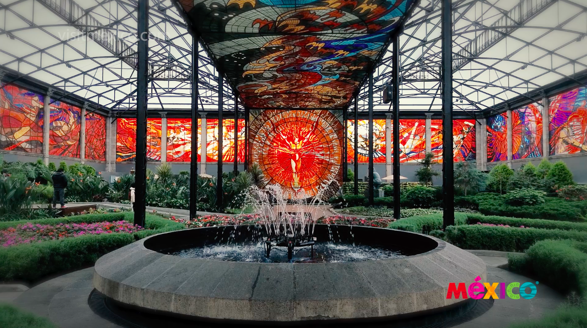
State of Mexico
Quintana Roo
October - Querétaro
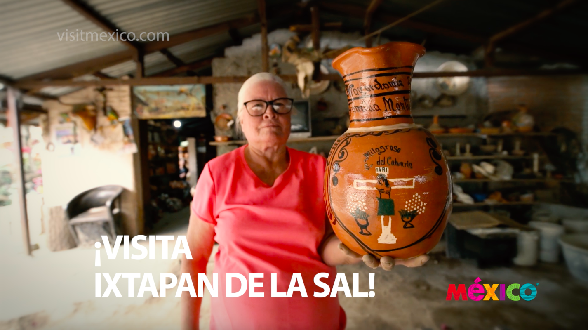
Ixtapan de la Sal
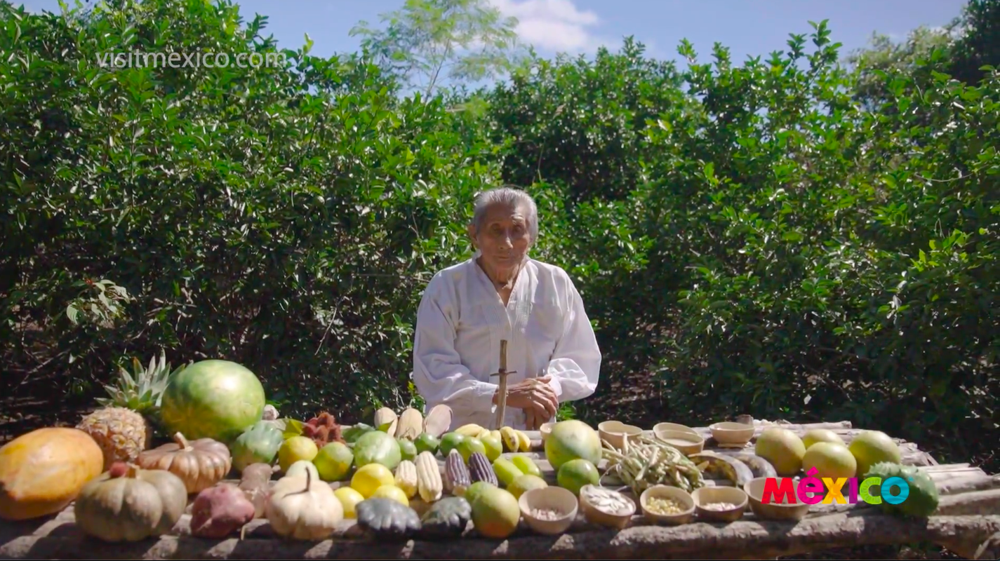
Mayan Milpa Ceremony
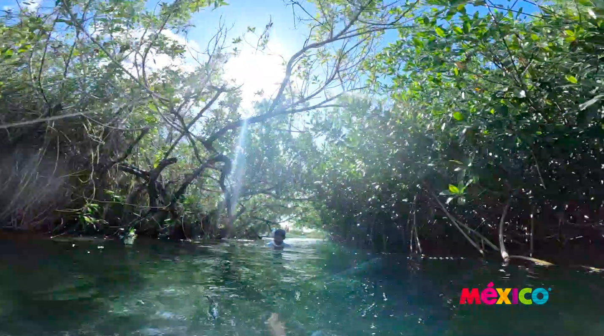
Sian Ka'an biosphere
Campeche Forsts
Black Christ Holy Statue
Discover the heart of Yucatan
Archaelogical sites in Yucatán
Visit Bécal, Campeche
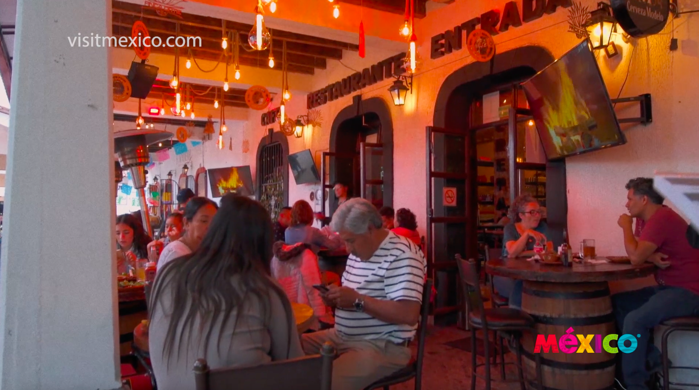
Discover 3 traditional towns in the State of Mexico
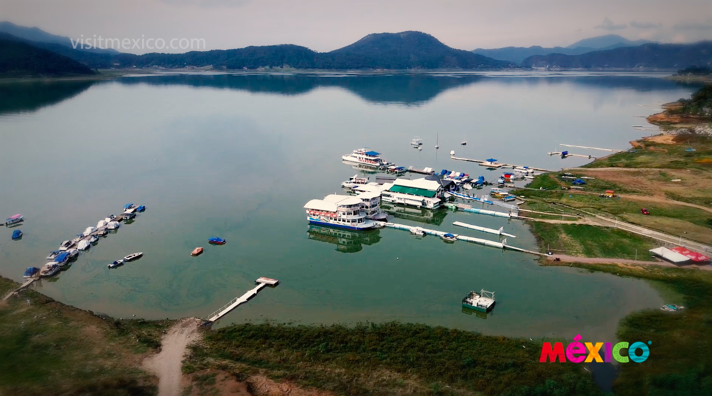
Valle de Bravo is magical
Cenotes in Yucatán
Tihosuco & Xpichil Traditions in Quintana Roo
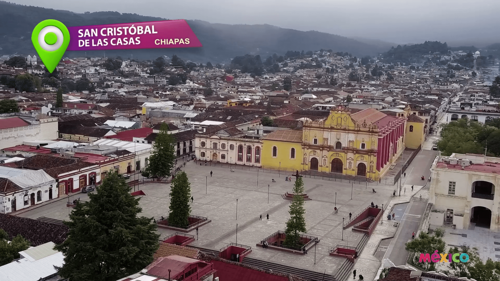
March - San Cristobal de las Casas
April - Bacalar
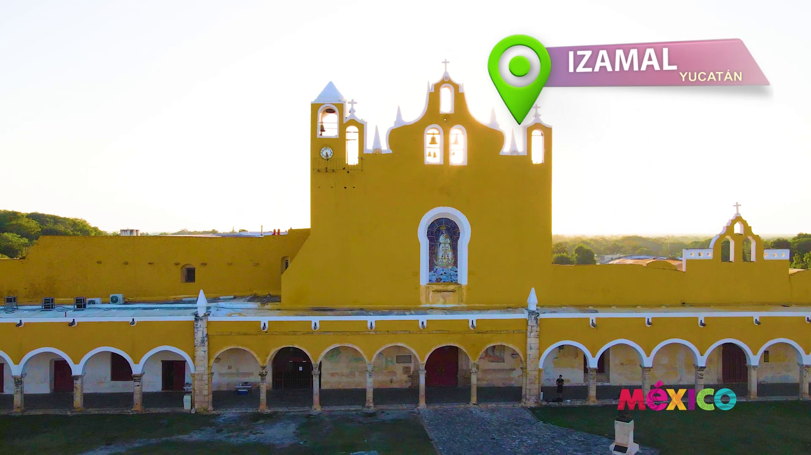
May - Izamal
June - Mexico City
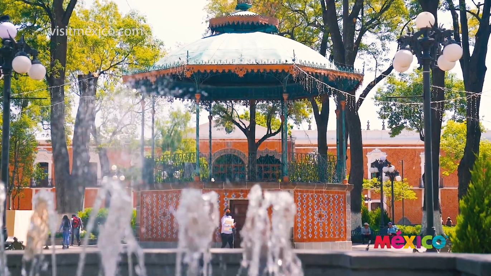
August - Tlaxcala
September - Aguascalientes
Load More
unmissable places
Aguascalientes
Nascar
Wellness
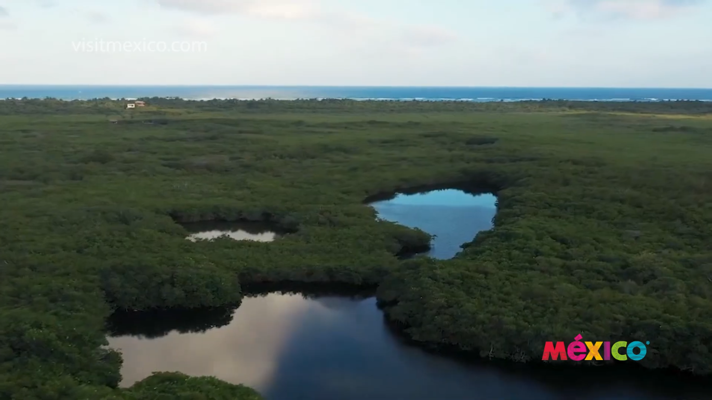
Sustainalility
Beaches
Adventure
Archeology
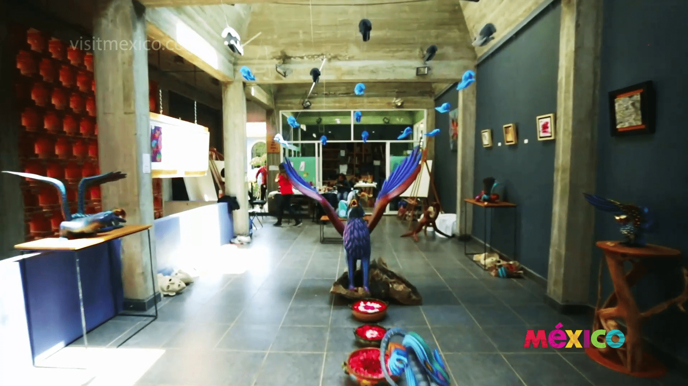
Handcrafts
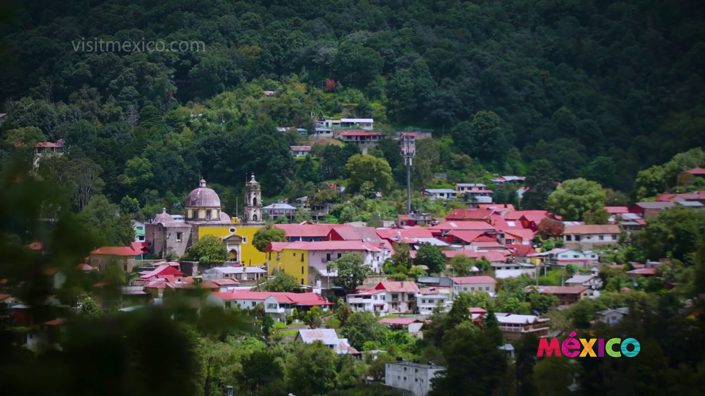
Mineral del Chico
Paracho
Cantaritos de Tequila
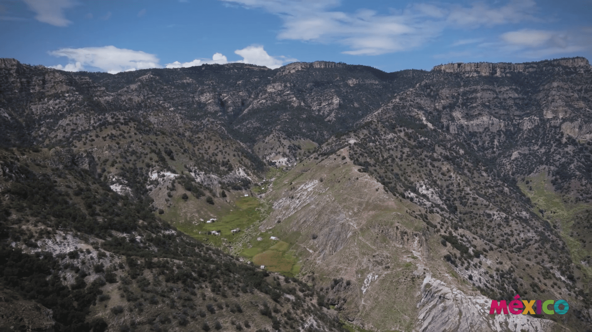
Barrancas del Cobre
Load More
that's how they travel
Antrax
Play Video
Regina
Sirvent
Play Video
Alex
Sirvent
Play Video
Jacky
Bracamontes
Play Video
Aleks
Syntek
Play Video
Eduardo
Santamarina
Play Video
Triviajero
How much do you know about Mexico? Put yourself to test.
Offering Day of the Dead
Cave Paintings, El Vallecito, Tecate
Campeche
Magdalena de Kino
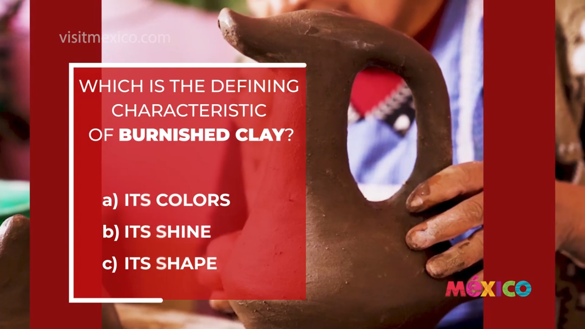
Artcrafts
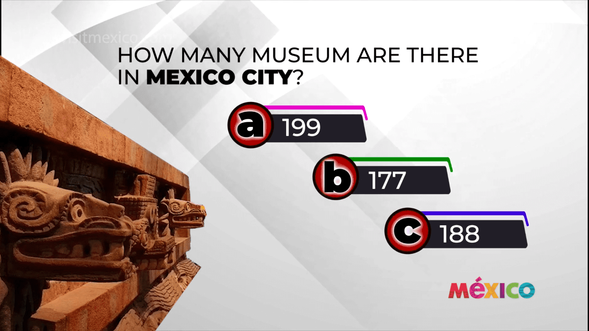
Mexico City
Izamal - Yucatán
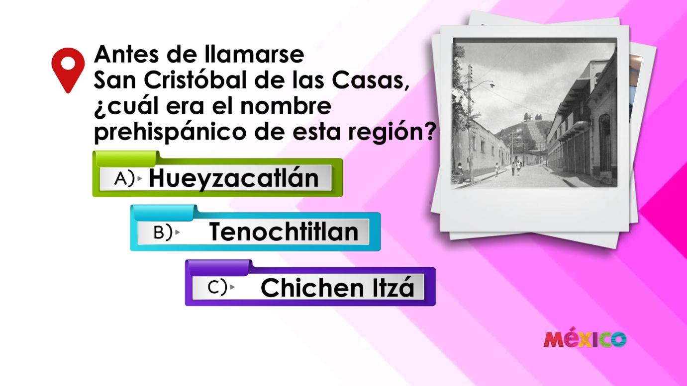
San Cristobal de las Casas - Chiapas
Load More
knowing mexico
Cempasúchil Flowers
Basaltic Pisms
Barbacoa from Hidalgo
Lele Dolls
Isla Aguada
Flavors From Tabasco
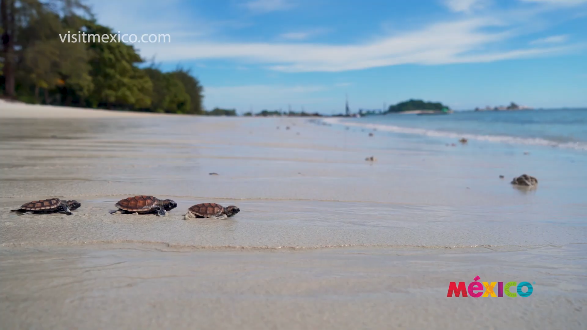
Turtle Nursery
Valle del monje (Monk's Valley)
Tequila
Load More
Great Mazatlan Aquarium
Flavors from Mexico
Chiles en Nogada
Chefs From Orizaba, Veracruz Interview
Chef Carlos Acosta Interview
Chef Aidé Maldonado Interview
Chef Jorge Orozco interview